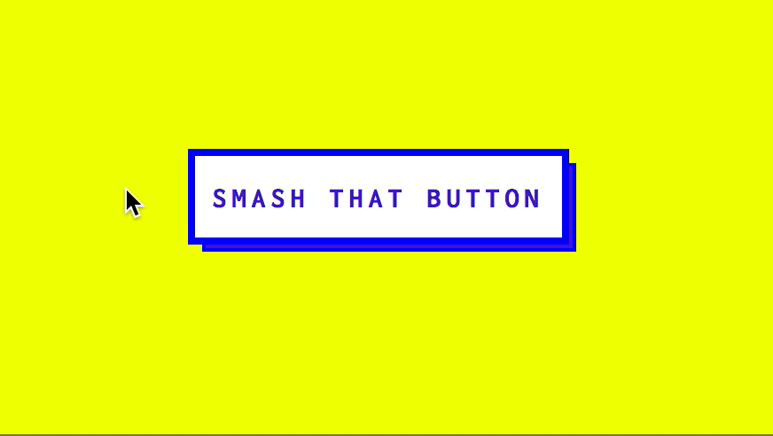
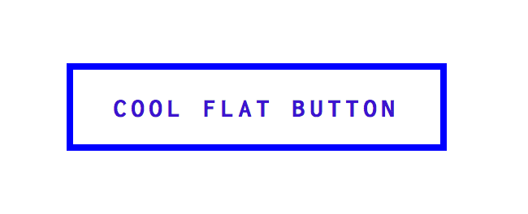
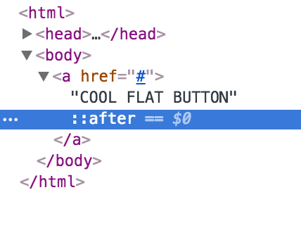
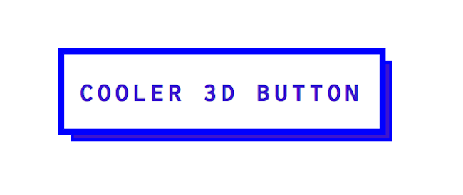
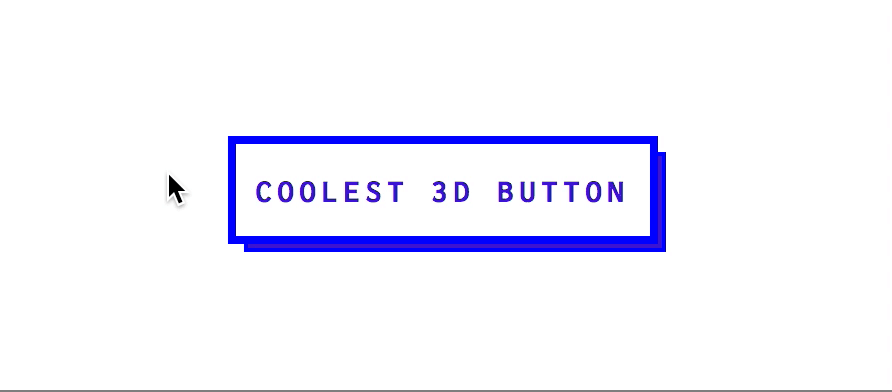

Flat design has been on trend in the web design world for quite some time. Flat design uses a minimum amount of stylistic elements. There are no gradients, drop shadows or texture. But that doesn’t mean there’s no animation. A flat design button deserves some movement! In this tutorial, I will show you how to animate a flat design 3D button. I’ve seen this particular button on many sites I admire, but I couldn’t find a codepen or jsfiddle replicating it. So I owed it to the internet to make my own.

- First let’s style the button. No 3D or hover effects yet…let’s just make a plain ol’ button
a {
/*Button Text Style*/
font-family:'Inconsolata', 'Helvetica', 'Arial', sans-serif;
font-size: inherit;
text-align: center;
font-weight: bold;
letter-spacing: 3px;
text-transform: uppercase;
text-decoration:none;
/*Button Color & Border*/
border: 4px solid #3C14D0 ;
color: #3C14D0;
background: #fff;
outline: none;
/*Position, Display, Size*/
position: relative;
display: inline-block;
padding: 15px 10px 14px;
cursor: pointer;
width: auto;
}
The Result 
- Let’s make the button look 3D. We’ll achieve this by styling a:after. You can style the :before and :after of any HTML element.

a:after {
/*Make a:after be as big as button*/
position: absolute;
width: 100%;
height: 100%;
/Give a:after Border & Background color/
border: 2px solid #3C14D0;
background-color: #3C14D0;
/*Decide Location of a:after..this gives a bottom right shadow*/
left: 4px;
top: 4px;
/Place a:after behind button/
z-index: -1
content: '';
/*Animation/Transition Speed*/
-webkit-transition: all 0.5s;
-moz-transition: all 0.5s;
-o-transition: all 0.5s; }
The Result 
- Let’s add the hover animation! We want it to feel like we are pressing the button. Or smashing it.
a:hover {
top:2px;
left:2px;
}
This brings the top part of the button with text a little down and a little to the right because top:2px means 2px away from the top and left: 2px means 2px away from the left. Aka down and right.
a:hover:after {
top:-2px;
left:-2px;
}
This brings the background blue rectangle up and right. If top:2px brings the button down 2px then top: -2px brings the background blue rectangle up 2px. Also, a:hover:after means when you hover on a link, this is what happens to the :after part. It’s micromanaging the hover of a link to a specific part.
Now you’ve got a really cool button.
The Result 
Checkout my CodePen of my flat design 3D button animation.